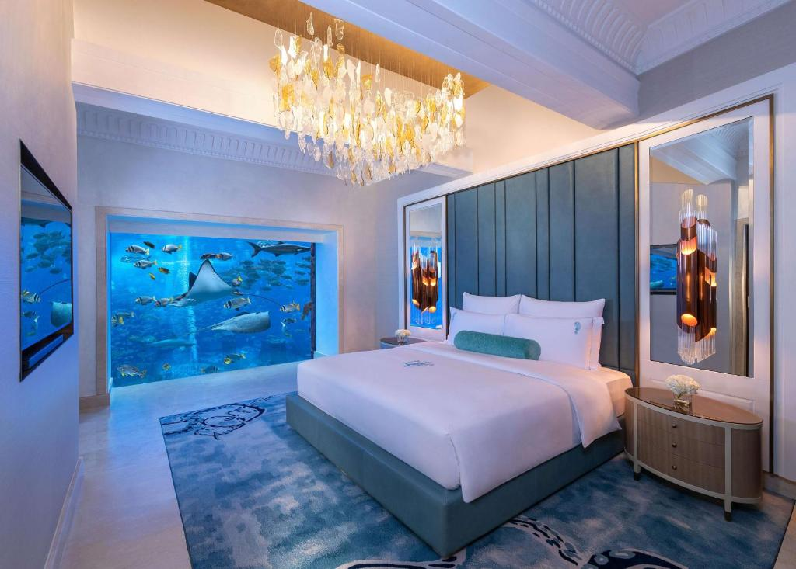
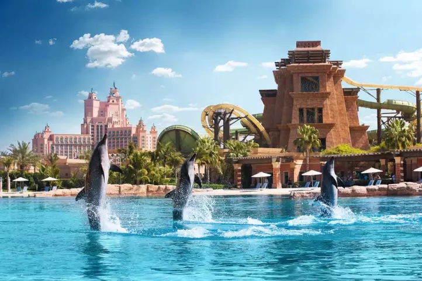
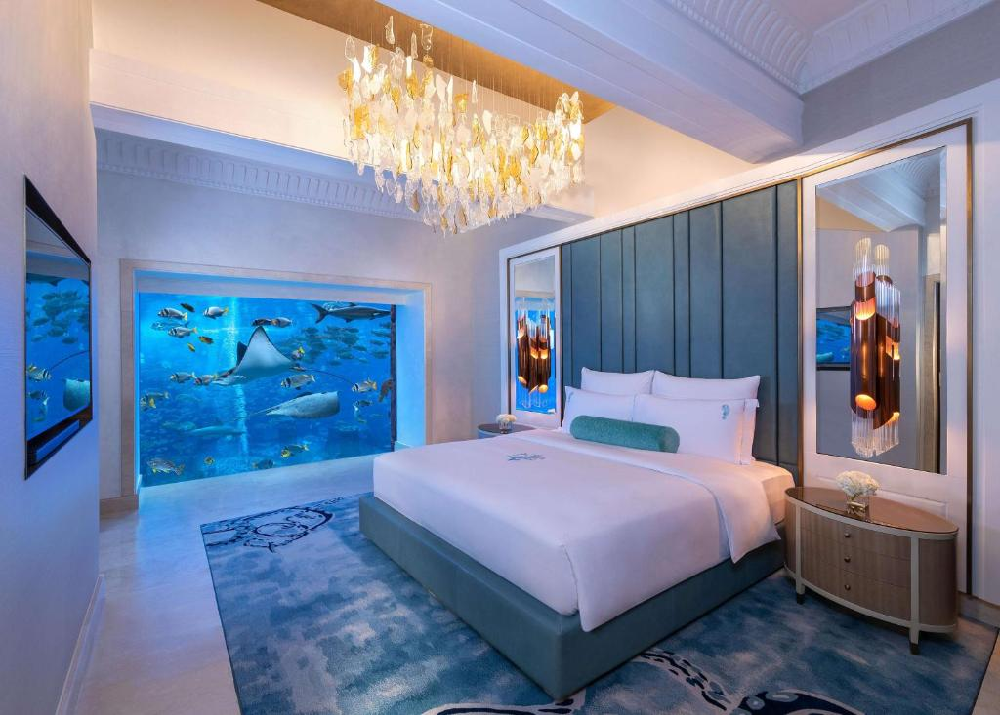
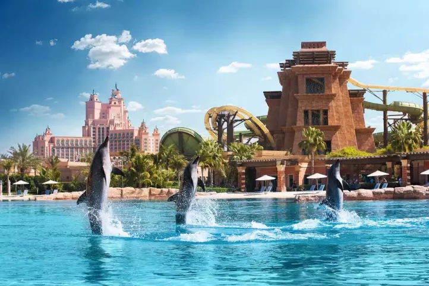

Готель "The Peninsula" — один з найвідоміших і найпрестижніших готелів у Гонконзі, відкритий у 1928 році. Цей готель поєднує вишукану класичну архітектуру з сучасними технологіями. Він розташований у центрі міста, поруч із мальовничими бухтами та історичними пам'ятками. Гості можуть насолодитися розкішними номерами з видом на Гонконг та безкоштовним доступом до приватного пляжу. Готель також пропонує широкий спектр послуг, включаючи спа, ресторани з міжнародною кухнею, та ексклюзивні магазини.


Готель "Marina Bay Sands" — архітектурний шедевр з трьома вежами, з'єднаними унікальним верхнім садом. Відкритий у 2010 році, цей готель став символом Сінгапуру. Гостям пропонується незабутній вид на місто з інфініті-басейну на даху, а також численні ресторани, бутики, спа та казино. Готель розташований поруч із знаменитими Садах біля затоки, які вражають своєю флорою і фауною. Номери оформлено з використанням розкішних матеріалів, забезпечуючи максимальний комфорт і затишок.
 



Atlantis The Palm — це розкішний курорт, розташований на знаменитій штучній острові Палм Джумейра в Дубаї. Відкритий у 2008 році, цей готель поєднує в собі елементи класичної та сучасної архітектури. Atlantis вражає гостей своїм незабутнім дизайном, величезними безкрайніми басейнами, аквапарком Aquaventure та океанаріумом Lost Chambers, де можна побачити понад 65 тисяч морських тварин.
Готель пропонує широкий вибір номерів і люксів, багато з яких мають панорамний вид на Перську затоку. Ресторани з кухнями з усього світу пропонують неперевершений вибір страв, включаючи відомий ресторан Nobu. Гості можуть насолоджуватися розкішними спа-процедурами, заняттями спортом, водними розвагами та екскурсіями.


"The Oberoi" в Удайпурі, відомий ще як "Готель на воді", розташований на березі озера Пічола й оточений горою Аравалі. Цей розкішний готель вражає своєю архітектурною величчю та традиційним індійським мистецтвом. Кожен номер має вигляд на озеро, а інтер'єри оформлені у класичному стилі. Гості можуть насолодитися вишуканими стравами місцевої та міжнародної кухні, а також відвідати спа-салон і тренажерний зал. Готель також організовує різноманітні екскурсії, включаючи круїзи по озеру та відвідування місцевих визначних пам'яток.


Mandarin Oriental" у Бангкоку — це один з найпрестижніших готелів у світі, відомий своєю бездоганною обслугою та історією, що налічує понад 140 років. Готель розташований на березі річки Чао Прайя й пропонує розкішні номери з сучасними зручностями і традиційним тайським стилем. Гості можуть насолодитися безкоштовними спа-послугами, зануритися у кулінарний досвід в одному з численних ресторанів, або просто насолодитися видом на річку з тераси. Готель також славиться своєю бібліотекою, в якій зібрані книги про тайську культуру та історію.


Готель "Shangri-La" у Токіо розташований на верхніх поверхах хмарочоса, пропонуючи гостям вражаючий вид на місто та гору Фудзі. Готель встановлює нові стандарти розкоші з сучасними номерами, що поєднують японський естетичний дизайн із сучасними зручностями. Тут є декілька ресторанів з різноманітною кухнею, включаючи традиційні японські страви. Гостям пропонується повноцінне обслуговування, включаючи спа-послуги, фітнес-центр та критий басейн. Shangri-La також забезпечує легкий доступ до визначних пам'яток Токіо, що робить його ідеальним місцем для відпочинку та бізнесу.


Burj Al Arab — один із найвідоміших і найвідоміших готелів у світі, розташований на штучному острові поблизу узбережжя Дубаю. Відкритий у 1999 році, цей п'ятизірковий готель вважається символом розкоші та елегантності. Його знаменитий силует, що нагадує вітрило, став іконічним для Дубая.
Burj Al Arab пропонує 202 розкішні апартаменти, оформлені в розкішному стилі, з додатковими послугами, такими як няня, шопінг та особистий консьєрж. Гості можуть насолоджуватися вишуканими стравами в ресторанах, що пропонують різноманітні кухні, або на вершині Burj Al Arab — у ресторані Al Muntaha, звідки відкривається приголомшливий вид на місто.
Окрім того, готель забезпечує високий рівень обслуговування та розваг,включаючи приватні пляжі, спа-процедури, водні види спорту та екскурсії містом. Burj Al Arab символізує не лише розкіш, але й інновації та культурну спадщину ОАЕ.